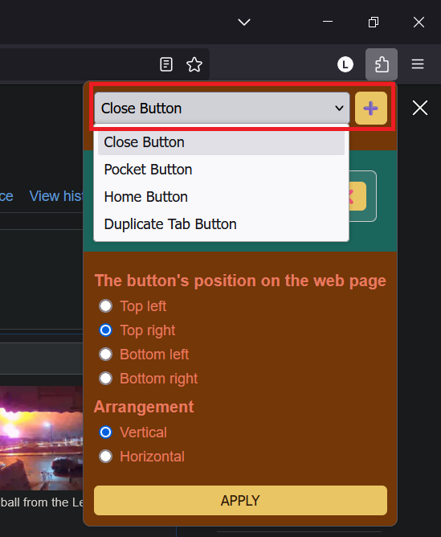
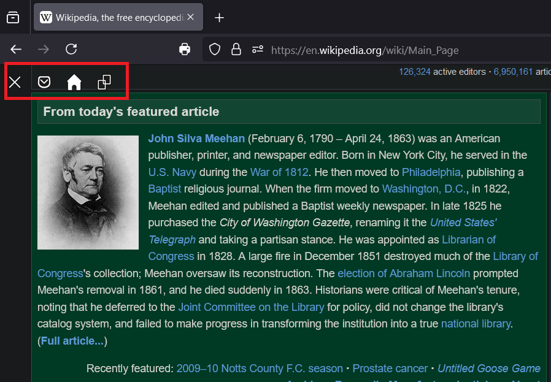
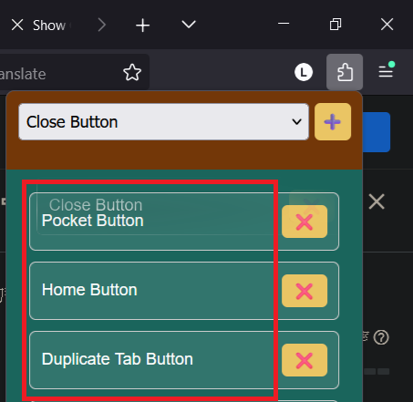

How to use Show Close Tab button?
1. Click the extension button to display the settings screen.
2. After clicking the drop-down menu and selecting the button you need, press the + button on the right to add a new button.

3. After adding a button, you can select the position of the button on the web page and the horizontal or vertical arrangement of the button, and then click the Apply button to complete the settings.
4. All buttons are displayed on the web page

5. Supplement: In Firefox under Windows, you can change the position of the button by dragging it.

Back to home